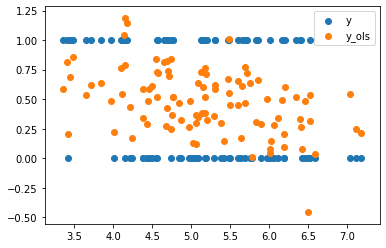
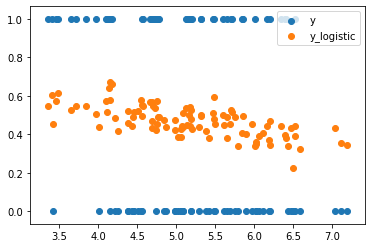

Logistic Regression in PyTorch from Scratch
In this article we will explore the logistic regression and how we can implement it using PyTorch. Contrary to linear regressions where the output variable \(y\) is continuous, logistic regressions concern binary variables, i.e.,
\[ y = \begin{cases} 1, & \text{with probability }p, \\ 0, & \text{with probability }1-p. \end{cases} \]
We are interested in modelling the conditional probability of \(y = 1\) given \(\boldsymbol{x}\), i.e.,
\[ p = P(y = 1 \mid \boldsymbol{X}; \boldsymbol{b}) = F(\boldsymbol{X}^T \boldsymbol{b}). \]
As an example, we might want to find the probability of a patient having cancer (\(y=1\)) given the patient’s medical information (\(x\)).
Note: Now take a moment to think about the following: what properties do we want \(F\) to have?
Since we want to model conditional probabilities, we want \(F\) to map to the domain \([0, 1]\). It now happens that the sigmoid function, let’s call it \(h\), has some very nice properties. It is defined as
\[ h(x) = \frac{1}{1 + e^{-x}}. \]
Ideally, we want \(P(y = 1 \mid \boldsymbol{X}; \boldsymbol{b})\) to be close to 1 when \(Y\) is 1 and close to 0 when \(Y\) is 0. Before explaining how we can find parameters \(b\) such that we come closest to the this ideal situation, let’s generate some random data.
%matplotlib inline
from fastai.basics import *n = 100Let’s first create a sample of our \(\boldsymbol{X}: n \times 2\) feature matrix.
x = torch.ones(n, 2)
x[:,0].normal_(1, 0.2)
x[:,1].normal_(5, 1.)
x[:5,:]tensor([[1.1678, 6.1665],
[0.9792, 5.8922],
[1.3373, 4.1348],
[0.8830, 6.4242],
[1.0932, 5.6926]])Next, we want to sample our latent variable \(\boldsymbol{y}^*\) as
\[ \boldsymbol{y}^* = \boldsymbol{X}^T\boldsymbol{b} + \boldsymbol{\varepsilon}, \]
where \(\boldsymbol{b} = [5, -1]\) and \(\boldsymbol{\varepsilon} \sim \text{Logistic}(0, 1)\)
b = tensor(5,-1.)
# Create logistic distribution in pytorch using inverse CDF sampling
base_distribution = torch.distributions.Uniform(0, 1)
transforms = [torch.distributions.SigmoidTransform().inv, torch.distributions.AffineTransform(loc=0, scale=1)]
logistic = torch.distributions.TransformedDistribution(base_distribution, transforms)
# Take sample of errors and compute y_star
error = logistic.rsample([n])
y_star = x@b + errorThe dependent variable can be computed as
\[ y = \begin{cases} 1, & \text{if } y^* > 0, \\ 0, & \text{else.} \end{cases} \]
This relates to the probability \(p\) as follows
\[ \begin{aligned} P(y = 1) &= P(y^* > 0) & \\ &= P(\boldsymbol{x}^T\boldsymbol{b} + \varepsilon > 0) & \\ &= P(\varepsilon > -\boldsymbol{x}^T\boldsymbol{b}) &\\ &= P(\varepsilon \leq \boldsymbol{x}^T\boldsymbol{b}) & \text{ (logistic regression is symmetric)} \\ &= F(\boldsymbol{X}^T\boldsymbol{b}) = p. \end{aligned} \]
y = y_star > 0Linear regression
Let’s check what happens if we now try to model the relationship between the conditional probability and \(\boldsymbol{X}\) as linear, i.e.,
\[ p = \boldsymbol{X}^T\boldsymbol{b} + \boldsymbol{\varepsilon}, \quad \boldsymbol{\varepsilon} \sim (0, \sigma^2). \]
Note that although we have no guarantee that \(p\) lies in the interval \([0,1]\), this rarely happens. A bigger problem is the heteroskedasticity of the error term. The linear model assumes the errors are homoskedastic, but it is possible to incoorporate heteroskedastic errors by estimating white standard errors.
Since we are dealing with a linear model, we do not need gradient descent and we can compute the MLE estimator in one line. The OLS (and MLE) estimator for \(\boldsymbol{b}\) is given by
\[ \boldsymbol{b}_\text{MLE} = (\boldsymbol{X}^T\boldsymbol{X})^{-1}\boldsymbol{X}^T\boldsymbol{y}. \]
This equation follows immediately from the first order condition of the mean-squared error of the model, i.e.,
\[ \begin{aligned} 0 = \frac{\partial (\boldsymbol{y} - \boldsymbol{X}^T \boldsymbol{b})^T(\boldsymbol{y} - \boldsymbol{X}^T \boldsymbol{b})}{\partial \boldsymbol{b}} &= \frac{\partial \boldsymbol{y}^T\boldsymbol{y}}{\partial \boldsymbol{b}} - \frac{\partial 2\boldsymbol{b}^T\boldsymbol{X}^T\boldsymbol{y}}{\partial \boldsymbol{b}} + \frac{\boldsymbol{X}^T\boldsymbol{X}\boldsymbol{b}}{\partial \boldsymbol{b}} \\ &= -2 \boldsymbol{X}^T \boldsymbol{y} + 2 \boldsymbol{X}^T \boldsymbol{X} \boldsymbol{b}. \end{aligned} \]
# Let's compute the MLE linear regressor
b_linear = torch.inverse(x.T@x)@x.T@y.float()
y_linear = x@b_linear
y_linear_hat = (y_linear > 0.5).float()
fig, ax = plt.subplots()
ax.scatter(x[:,1], y.float(), label='y')
ax.scatter(x[:,1], y_linear, label='y_ols')
leg = ax.legend();
Indeed, we observe that almost all observations lay between the \([0, 1]\) interval.
Logistic regression
Unlike the linear regression, the logistic regression has no closed-form solution. The most popular way of estimating the parameters \(\boldsymbol{b}\) is to estimate the maximum likelihood estimator:
\[ \begin{aligned} LL(\boldsymbol{b}; \boldsymbol{X}, \boldsymbol{y}) &= \prod_{i=1}^N P(Y = 1 \mid \boldsymbol{x}_i; \boldsymbol{b})^{y_i} (1 - P(y = 1 \mid \boldsymbol{x}_i; \boldsymbol{b}))^{1-y_i} \\ &= \prod_{i=1}^N h(\boldsymbol{x}_i^T\boldsymbol{b})^{y_i} (1 - h(\boldsymbol{x}_i^T\boldsymbol{b}))^{1-y_i}. \end{aligned} \]
Remember that we wanted \(P(y = 1 \mid \boldsymbol{x}_i; \boldsymbol{b})\) to be close to one when \(y_i = 1\). If that’s our goal, it means that we want \(LL(\boldsymbol{b}; \boldsymbol{X}, \boldsymbol{y})\) to be as large as possible. In other words, we want to find a \(\boldsymbol{b}\) such that \(LL(\boldsymbol{b}; \boldsymbol{X}, \boldsymbol{y})\) is maximised.
Since computers do not like the product of many numbers between \([0, 1]\) because it results in floating point problems (why would that be?). Therefore, we take the log of the likelihood function. Since the log is a monotonic function, maximising the likelihood is the same as maximising the log-likelihood. Because our objective is now additive, a last trick that we can use is to divide this log-likelihood by the sample size. This gives
\[ ll(\boldsymbol{b}; \boldsymbol{X}, \boldsymbol{y}) = \frac{1}{N} \sum_{i=1}^N y_i \log(h(\boldsymbol{x}_i^T\boldsymbol{b})) + (1-y_i) \log(1-h(\boldsymbol{x}_i^T\boldsymbol{b})). \]
In PyTorch we can simply formulate this as
def ll(x, y, b):
return((1/len(y)) * (torch.log(torch.sigmoid(x@b)[y]).sum() + torch.log(1 - torch.sigmoid(x@b)[~y]).sum()))Like I mentioned before, this (log-)likelihood function does not have a closed-form solution (check it if you want :)). Therefore, we will apply the (stochastic) gradient descent algorithm to train our model.
b = tensor(b_linear)
b = nn.Parameter(b)
def update():
loss = ll(x, y, b)
loss.backward()
if t % 10 == 0: print(loss)
with torch.no_grad():
print(b.grad)
b.sub_(-lr * b.grad)
b.grad.zero_()lr = 1e-1
for t in range(10): update()
print(b)tensor(-0.6698, grad_fn=<MulBackward0>)
tensor([-0.1090, -0.7824])
tensor([-0.0060, -0.2512])
tensor([ 0.0269, -0.0826])
tensor([ 0.0369, -0.0312])
tensor([ 0.0400, -0.0153])
tensor([ 0.0409, -0.0104])
tensor([ 0.0412, -0.0088])
tensor([ 0.0412, -0.0083])
tensor([ 0.0412, -0.0082])
tensor([ 0.0411, -0.0081])
Parameter containing:
tensor([ 1.3062, -0.2848], requires_grad=True)y_log = torch.sigmoid(x@b)
y_log_hat = (y_log > 0.5).float()
fig, ax = plt.subplots()
ax.scatter(x[:,1], y.float(), label='y')
ax.scatter(x[:,1], y_log, label='y_logistic')
leg = ax.legend();
Evaluating the linear and logistic classification models
The most basic tool to evaluate the performance of our classification models is to compute the accuracy. The accuracy is the percentage of correctly predicted labels \(\boldsymbol{y}\). For our linear model we have
(y_linear_hat == y.float()).sum().float() * 100 / len(y)tensor(75.)and our logistic model has an accuracy of
(y_log_hat == y.float()).sum().float() * 100 / len(y)tensor(72.)Conclusion
In this post we learnt about the one of the oldest techniques to model binary outcome variables: the logistic regression. We discussed the theoretical foundation, an alternative modelling technique in the form of a linear model and we learnt how can train a logistic regression from scratch in PyTorch.
After writing this post I realised that we can easily see how the logistic regression fits into the framework we discussed in the previous post with the three fundamental building blocks.
- The architecture \(f\) that maps input \(\boldsymbol{X}\) to outputs \(\boldsymbol{y}\) with parameters \(\boldsymbol{\theta}\) is in this case the sigmoid function with parameters;
- the learning algorithm is a simple (stochastic) gradient descent;
- and the objective function is the likelihood function.
See you for lesson 3 of the fast.ai course!